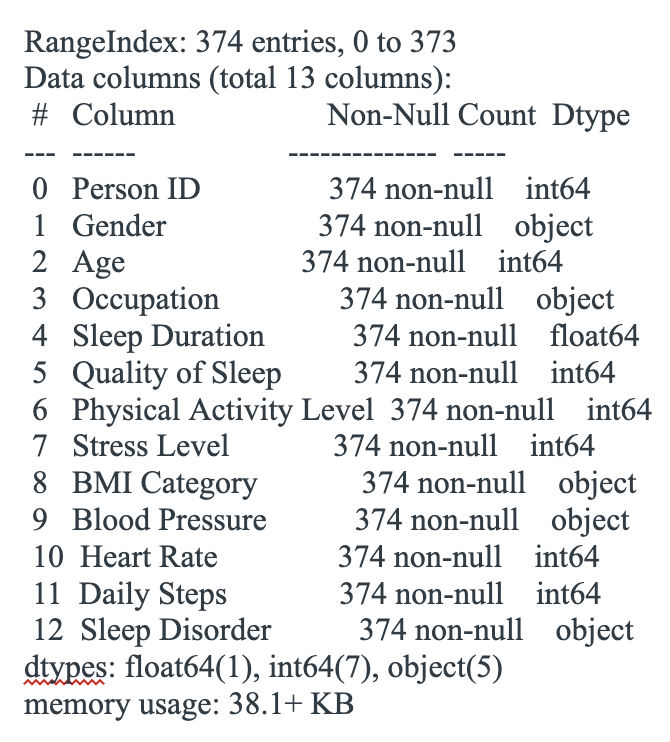

Pre-Processing:
Pre-Processing is when you take raw data and we transform it into a format that can be understood by the computer and machine learning algorithms.
Here there are two variations of pre-processing established.

The first step was to find all of the unique blood pressure values and put it in a list to remove duplicates where if a value was in that list, it was 0, and if x was not in that list, it was 1, same for gender, 0 was female, 1 was male.
Then we converted columns to bins to convert continuous data into categorical.
Finally we used sci-kit learn’s preprocessing label encoder to convert non-numeric data (String or Boolean) into numbers, and removed outliers and missing data.